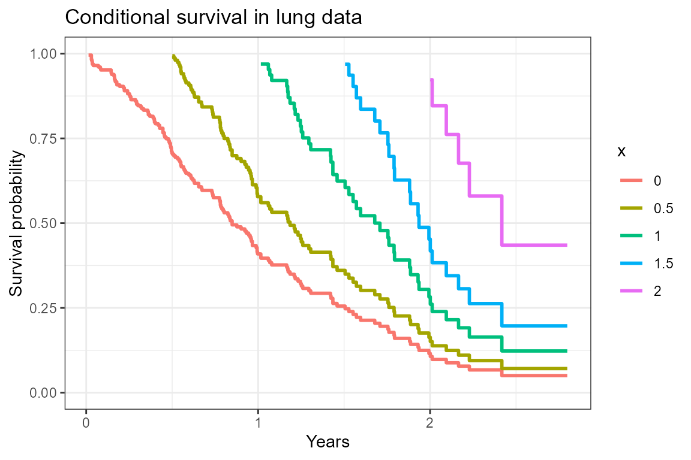

plot_cs.RmdTo plot the conditional survival curves at baseline, and for those who have survived 6 months, 1 year, 1.5 years, and 2 years, we use the gg_conditional_surv function.
The lung dataset from the survival package will be used to illustrate.
# Scale the time variable to be in years rather than days
lung2 <-
mutate(
lung,
os_yrs = time / 365.25
)myfit <- survfit(Surv(os_yrs, status) ~ 1, data = lung2)
cond_times <- seq(0, 2, 0.5)
gg_conditional_surv(
basekm = myfit,
at = cond_times,
main = "Conditional survival in lung data"
) 